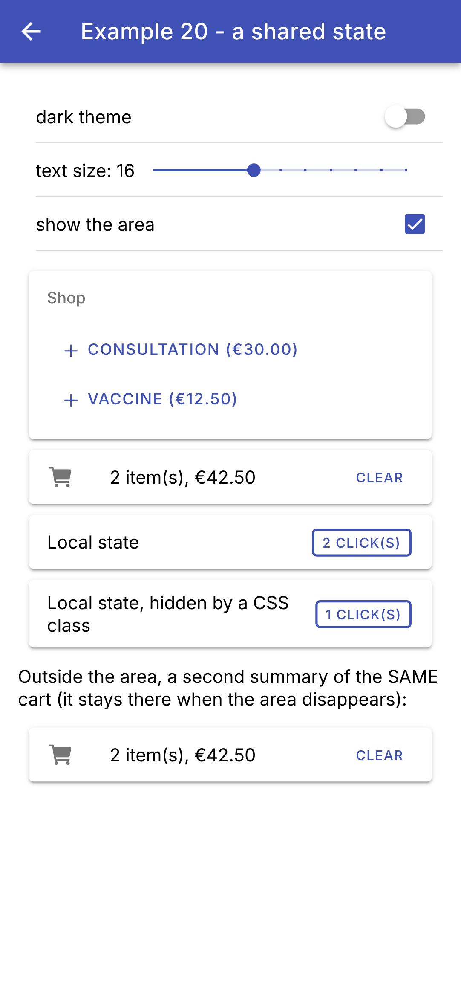

6. Asynchrone Operationen und gemeinsamer Zustand
6.1. Beispiel 19: Promises, Observables und Timer
Vieles geschieht „später“: Timer-Ticks, Tastatureingaben und Serverantworten. Eine [Ionic]-Anwendung kennt dafür zwei Typen:
- [Promise<T>], der von [JavaScript]: EIN Wert, später (eine Serverantwort, eine in einem Fenster getroffene Auswahl). Die Schlüsselwörter [async] und [await] erlauben es, darauf zu warten, ohne die Anwendung zu blockieren. Das ist das Gegenstück zum [Future] von [Dart];
- [Observable<T>], der aus der Bibliothek [RxJS] stammt, die mit [Angular] ausgeliefert wird: eine FOLGE von Werten im Zeitverlauf (Ticks, Tastatureingaben, Nachrichten ...), die durch Operatoren ([map], [take], [debounceTime], [switchMap] ...) transformiert werden. Das ist der [Stream] von [Dart]. [JavaScript] kennt ebenfalls asynchrone Entsprechungen: die asynchronen Generatoren ([async function*]), die den Funktionen [async*] von [Dart] entsprechen.
Um sie anzuzeigen, stellt [Angular] drei Werkzeuge bereit, die Entsprechungen von [FutureBuilder] und [StreamBuilder]: die Pipe [async] (ein [Observable], das aus dem Template gelesen wird), [toSignal()] (ein [Observable], das in ein Signal umgewandelt wird) und [resource()] (ein [Promise], das in Signals umgewandelt wird). Und für das, was nach einer Verzögerung geschehen muss: [setTimeout] oder die Timer von [RxJS] ([timer], [interval]).
6.1.1. Die Seite
| // =========================================================================
// src/app/ex19-asynchronous/ex19.page.ts - Promises, Observables, Timer
// -------------------------------------------------------------------------
// Vieles geschieht "später": die Ticks eines Timers, die
// Tastenanschläge, die Antwort eines Servers. Zwei Typen stehen zur Verfügung:
// - Promise (JavaScript): EIN Wert, später (die Antwort eines
// Servers); mit async / await wartet man darauf;
// - Observable (Bibliothek RxJS, mit Angular ausgeliefert): eine FOLGE von
// Werten über die Zeit (Ticks, Tastenanschläge ...), die wir mit "Operatoren"
// umwandeln (map, take, debounceTime, switchMap ...).
// Zur Anzeige bietet Angular die Async-Pipe (ein Observable im
// Template), toSignal() (ein Observable, in ein Signal umgewandelt) und resource() (ein
// Promise, in ein Signal umgewandelt).
// =========================================================================
import { AsyncPipe } from '@angular/common';
import { Component, resource, signal } from '@angular/core';
import { takeUntilDestroyed, toSignal } from '@angular/core/rxjs-interop';
import {
IonBackButton, IonButtons, IonCard, IonCardContent, IonCardHeader, IonCardSubtitle, IonContent, IonHeader, IonInput,
IonNote, IonTitle, IonToolbar,
} from '@ionic/angular';
import { debounceTime, finalize, from, map, Observable, of, Subject, switchMap, take, tap, timer } from 'rxjs';
const doctors = ['Marie PELISSIER', 'Paul TATOU', 'Sophie DUPONT', 'Jacques DURAND', 'Martine PELLETIER'];
// ein Timer in Form eines Promise: Er endet nach ms Millisekunden
function wait(ms: number): Promise<void> {
return new Promise((resolve) => setTimeout(resolve, ms));
}
// ein simulierter "Server": Die Antwort (ein Promise) trifft nach einer zufälligen Verzögerung ein
async function search(text: string): Promise<string[]> {
await wait(200 + Math.floor(Math.random() * 600));
return doctors.filter((m) => m.toLowerCase().includes(text));
}
// 1a. ein ASYNCHRONER GENERATOR (async function*, mit Stern): Jedes
// yield SENDET einen Wert an den, der darüber iteriert (for await...of)
async function* countdown(start: number): AsyncGenerator<number> {
for (let remaining = start; remaining >= 0; remaining--) {
yield remaining;
if (remaining > 0) await wait(1000);
}
}
// "15:30:45"
const currentTime = () => new Date().toTimeString().substring(0, 8);
@Component({
selector: 'app-ex19',
imports: [
AsyncPipe, IonHeader, IonToolbar, IonButtons, IonBackButton, IonTitle, IonContent, IonCard, IonCardHeader,
IonCardSubtitle, IonCardContent, IonInput, IonNote,
],
templateUrl: './ex19.page.html',
styles: `
.number { font-size: 2em; color: var(--ion-text-color); }
.log { font-size: 12px; }
`,
})
export class Ex19Page {
readonly log = signal<string[]>([]);
// 1a. der Generator, durch from() in ein Observable umgewandelt; das Template
// zeigt es mit der Async-Pipe an. EINMAL erzeugt, in einem Feld
readonly countdown$: Observable<number> = from(countdown(20));
// 1b. derselbe Countdown, mit RxJS-Operatoren: timer(0, 1000)
// liefert jede Sekunde 0, 1, 2 ...; take(21) stoppt nach 21 Werten;
// map wandelt sie um (0 -> 20, 1 -> 19 ...). toSignal: ein Signal, dessen Wert
// der zuletzt empfangene Wert ist (undefined vor dem ersten)
readonly countdown = toSignal(timer(0, 1000).pipe(take(21), map((i) => 20 - i)));
// 3. ein Promise, das nach einer Sekunde endet, gefolgt von resource():
// ein Objekt mit Signals (isLoading(), hasValue(), value(), error() ...)
readonly message = resource({
loader: async () => {
await wait(1000);
return 'three (one second later)';
},
});
// 2. die Suche während der Eingabe: Ein Subject ist ein Observable, in
// das wir die Werte selbst HINEINSCHIEBEN (next): hier jeden Tastenanschlag
private readonly keystrokes = new Subject<string>();
readonly results = signal<string[]>([]);
constructor() {
this.keystrokes
.pipe(
// das DEBOUNCE: Ein Wert wird erst weitergegeben, wenn 400 ms lang
// kein neuer Tastenanschlag erfolgt; dichter aufeinanderfolgende Anschläge werden vergessen
debounceTime(400),
map((text) => text.trim().toLowerCase()),
// switchMap: Jeder Text startet eine Suche (ein Observable); eine
// NEUE Suche BRICHT die vorherige ab, deren Antwort
// nie weitergegeben wird: keine "veraltete" Antwort
switchMap((text) => this.launch(text)),
// das Abonnement endet, wenn die Seite zerstört wird
takeUntilDestroyed(),
)
.subscribe((found) => this.results.set(found));
}
private trace(message: string): void {
this.log.update((lines) => [...lines, `${currentTime()} ${message}`]);
}
// bei jedem Tastenanschlag aufgerufen
input(text: string | null | undefined): void {
this.keystrokes.next(text ?? '');
}
private launch(text: string): Observable<string[]> {
// weniger als zwei Buchstaben: keine Suche, kein Ergebnis
if (text.length < 2) {
return of([]);
}
this.trace(`search sent: "${text}"`);
let received = false;
// from(Promise): ein Observable, das den Wert des Promise liefert und dann abgeschlossen wird
return from(search(text)).pipe(
tap(() => (received = true)),
// finalize: aufgerufen, wenn das Observable abgeschlossen wird ODER wenn wir es abbestellen
// (genau das tut switchMap, wenn eine neue Suche eintrifft)
finalize(() => {
if (!received) this.trace(`response ignored (stale): "${text}"`);
}),
);
}
}
|
| <!-- ======================================================================
ex19.page.html - Promises, Observables und Timer
====================================================================== -->
<ion-header>
<ion-toolbar color="primary">
<ion-buttons slot="start">
<ion-back-button defaultHref="/" />
</ion-buttons>
<ion-title>Example 19 - asynchrony</ion-title>
</ion-toolbar>
</ion-header>
<ion-content class="ion-padding">
<ion-card>
<ion-card-header>
<ion-card-subtitle>Two countdowns (Observables)</ion-card-subtitle>
</ion-card-header>
<ion-card-content>
<!-- die Async-Pipe abonniert das Observable, zeigt jeden neuen
Wert an und beendet das Abonnement, wenn die Seite verschwindet; sie ist null
vor dem ersten Wert. @let: eine Template-Variable -->
@let n = countdown$ | async;
<p>async function* and async pipe: <span class="number">{{ n ?? '...' }}</span></p>
<!-- das Signal: undefined vor dem ersten Wert -->
<p>RxJS and toSignal(): <span class="number">{{ countdown() ?? '...' }}</span></p>
</ion-card-content>
</ion-card>
<ion-card>
<ion-card-header>
<ion-card-subtitle>A search as you type (debounce, stale responses)</ion-card-subtitle>
</ion-card-header>
<ion-card-content>
<!-- (ionInput): bei jedem Tastenanschlag -->
<ion-input placeholder="at least two letters: pel, dur..." (ionInput)="input($event.detail.value)" />
@for (r of results(); track r) {
<p>• {{ r }}</p>
} @empty {
<ion-note>no result</ion-note>
}
</ion-card-content>
</ion-card>
<ion-card>
<ion-card-header>
<ion-card-subtitle>Waiting for a Promise (resource)</ion-card-subtitle>
</ion-card-header>
<ion-card-content>
<!-- solange das Promise nicht beendet ist: der Wartezustand -->
@if (message.hasValue()) {
<p>received: {{ message.value() }}</p>
} @else {
<ion-note>waiting...</ion-note>
}
</ion-card-content>
</ion-card>
<h6>Log</h6>
@for (line of log(); track $index) {
<div class="log">{{ $index + 1 }}. {{ line }}</div>
}
</ion-content>
|
Werkzeuge:
- Zeilen 28–30 (.ts): ein Timer in Form eines [Promise]. [new Promise(...)] erhält eine Funktion, die die Aufgabe startet und [resolve] aufruft, wenn sie beendet ist; hier ruft [setTimeout] sie nach [ms] Millisekunden auf. [await wait(1000)] wartet also eine Sekunde, ohne die Anwendung zu blockieren (das war [Future.delayed] bei [Dart]);
- Zeilen 33–36 (.ts): ein simulierter „Server“: eine Funktion [async], die ein [Promise] zurückgibt; ihre Antwort trifft nach einer zufälligen Verzögerung ein (zwischen 200 und 800 Millisekunden);
- Zeilen 40–45 (.ts): ein asynchroner Generator: eine Funktion [async function*] (mit einem Sternchen). Jedes [yield] übergibt einen Wert an den, der den Generator durchläuft; zwischen zwei Werten wartet die Funktion eine Sekunde. Er kann mit einer Schleife [for await (const n of countdown(20))] durchlaufen werden.
Der erste Countdown:
- Zeile 67 (.ts): der Generator, umgewandelt in ein [Observable] durch [from()], das einen asynchronen Generator, ein [Promise], ein Array ... akzeptiert. Per Konvention endet der Name einer Variablen, die ein [Observable] enthält, auf [$];
- Zeile 23 (HTML): Die Pipe [async] abonniert das [Observable], zeigt jeden neuen Wert an und beendet das Abonnement automatisch, wenn die Seite geschlossen wird; vor dem ersten empfangenen Wert steht sie auf [null]. [@let n = ...] deklariert eine Template-Variable, die in Zeile 24 gelesen wird ([n ?? '...']: drei Punkte, solange [n] gleich [null] ist). Wie bei [Flutter] wird das [Observable] EINMAL in einem Klassenfeld erstellt: Würde das Template eine Methode aufrufen, die es erzeugt, würde jede Bildschirmaktualisierung den Countdown neu starten!
Der zweite, mit den [RxJS]-Operatoren:
- Zeile 73 (.ts): [timer(0, 1000)] gibt sofort 0 aus, danach jede Sekunde 1, 2, 3 ...; die Methode [pipe] wendet nacheinander Operatoren darauf an: [take(21)] behält nur die ersten 21 Werte (dann endet das [Observable]); [map] transformiert jeden Wert (0 wird zu 20, 1 wird zu 19 ...). [toSignal] abonniert das [Observable] und macht daraus ein Signal, das dem zuletzt empfangenen Wert entspricht ([undefined] vor dem ersten); das Abonnement wird beendet, wenn die Seite zerstört wird;
- Zeile 26 (HTML): Das Signal wird wie jedes andere Signal gelesen.
Das erwartete [Promise]:
- Zeilen 77–82 (.ts): [resource()] erhält eine Funktion [loader], die ein [Promise] zurückgibt, ruft sie auf und stellt ihren Zustand als Signals bereit: [isLoading()], [hasValue()], [value()], [error()]. Würden wir eine Option [params] angeben – eine Funktion, die Signals liest –, würde die Resource neu geladen, sobald sich diese ändern (der [loader] wird dagegen nicht überwacht): Wir verwenden sie, um einen Server abzufragen;
- Zeilen 51–55 (HTML): Solange das [Promise] nicht abgeschlossen ist, wird der Platzhalterinhalt angezeigt; danach sein Wert (das war [FutureBuilder] und [ConnectionState.done]).
Suche während der Eingabe:
- Zeile 86 (.ts): Ein [Subject] ist ein [Observable] , in das wir die Werte selbst SCHIEBEN ([next]): hier jeden Tastendruck (Zeilen 111–113, ausgelöst durch das Ereignis [(ionInput)] des Feldes, Zeile 36 des HTML);
- Zeile 94 (.ts): Debouncing: Wir warten, bis der Benutzer eine Pause macht, bevor wir den Server abfragen, statt für jeden Tastendruck eine Anfrage zu senden. Der Operator [debounceTime(400)] sendet einen Wert erst nach 400 Millisekunden ohne neuen Wert: Zu dicht aufeinanderfolgende Tastendrücke werden ignoriert. Bei [Flutter] musste man bei jedem Tastendruck von Hand einen Timer ([Timer]) abbrechen und neu starten;
- Zeile 95 (.ts): der Text ohne umgebende Leerzeichen, in Kleinbuchstaben;
- Zeile 99 (.ts): veraltete Antworten. Eine Antwort, die eintrifft, NACHDEM eine andere Suche gestartet wurde, muss ignoriert werden: Andernfalls würde die langsame Antwort einer alten Suche die der neuen überschreiben. Der Operator [switchMap] übernimmt das: Für jeden Text ruft er [launch] auf, das ein [Observable] (die Suche) zurückgibt; trifft ein neuer Text ein, BEENDET er das Abonnement, bricht damit die vorherige Suche ab – deren Antwort nie weitergegeben wird – und startet dann die neue. Bei [Flutter] musste man die Suchen nummerieren und die Nummern vergleichen;
- Zeile 101 (.ts): [takeUntilDestroyed()] beendet das Abonnement, wenn die Seite zerstört wird: Ohne es würden [Subject] und seine Operatoren weiter existieren (das war das [dispose] von [Flutter]). Es muss in einem „Injection-Kontext“ aufgerufen werden: hier im Konstruktor;
- Zeile 103 (.ts): [subscribe] abonniert das [Observable]: Solange niemand abonniert, geschieht nichts. Jede Ergebnisliste wird in einem Signal gespeichert, das das Template anzeigt (Zeilen 37–41 des HTML);
- Zeilen 117–119 (.ts): weniger als zwei Buchstaben: keine Suche; [of([])] ist ein [Observable] , das sofort eine leere Liste zurückgibt;
- Zeilen 123–130 (.ts): die Suche: das [Promise] des Servers, umgewandelt in ein [Observable] durch [from()]. [tap] führt nebenbei eine Aktion aus, ohne den Wert zu verändern: Es vermerkt, dass die Antwort eingetroffen ist. [finalize] wird aufgerufen, wenn das [Observable] endet oder der Benutzer es abbestellt: Ist die Antwort nicht eingetroffen, hat [switchMap] diese Suche verworfen, und das wird protokolliert.
Wir tippen schnell „p“, „pe“ und „pel“: Es wird nur eine einzige Suche gesendet. Dann „du“, gefolgt von „dup“, bevor die Antwort auf „du“ eintrifft: Die Suche nach „du“ wird verworfen (ihre Antwort wird ignoriert), sobald die Suche nach „dup“ gesendet wird. Links die Seite beim Öffnen, rechts fünf Sekunden später:
Im Protokoll steht die Zeile „Antwort ignoriert“ vor der Zeile „Suche gesendet: ‚dup‘“: [switchMap] beendet das Abonnement der alten Suche, bevor es die neue startet.
In [Dart] sind [Future] und [Stream] Teil der Basisbibliothek, und [async], [await], [async*], [yield] und [await for] gehören zur Sprache. In [JavaScript] sind [Promise], [async], [await] und die asynchronen Generatoren ebenfalls Teil der Sprache; für Wertefolgen stützt sich [Angular] jedoch auf die Bibliothek [RxJS], deren rund hundert Operatoren Probleme wie Debouncing und veraltete Antworten in einer einzigen Zeile lösen. Der HTTP-Client von [Angular] (Beispiele 22 bis 25) gibt ebenfalls [Observable] zurück. Seit der Einführung von Signals [Angular] beschränkt [RxJS] auf Ereignisströme und verwendet [toSignal] oder [resource] , um sie anzuzeigen.
6.2. Beispiel 20: Ein gemeinsamer Zustand
Dieselbe Frage wie in den vorangegangenen Lektionen: Welche „Gültigkeitsbereiche“ gibt es für die Daten einer Anwendung?
- Der lokale Zustand einer Komponente verschwindet, wenn die Komponente zerstört wird;
- der Zustand eines „Stores“ wird von allen Komponenten geteilt und überlebt deren Entfernung … aber nicht das Beenden der Anwendung;
- Auf dem Gerät gespeicherter Zustand überlebt das Beenden der Anwendung.
6.2.1. Der Warenkorb
| // =========================================================================
// src/app/ex20-shared-state/stores/cart.ts - ein GEMEINSAMER ZUSTAND: ein Service
// -------------------------------------------------------------------------
// Ein "Store" ist ein Zustand, der AUSSERHALB der Seiten und der
// Komponenten lebt, in EINER einzigen Instanz, geteilt von allen, die ihn lesen.
// Mit Angular ist es ein SERVICE (siehe Beispiel 14), dessen Zustand aus
// SIGNALS besteht. Übliche Organisation:
// - der ZUSTAND: PRIVATE Signals (_items);
// - ihr Lesezugriff: schreibgeschützte Sichten (asReadonly);
// - die AKTIONEN: Methoden, die als einzige den Zustand ändern;
// - die berechneten Werte: computed-Signals.
// Eine Komponente erhält ihn mit inject(Cart); ihr Template, das die
// Signals liest, wird aktualisiert, wenn SIE sich ändern, und nur dann.
// providedIn: 'root': Der Service wird bei der ersten Anforderung erzeugt und lebt
// so lange wie die Anwendung: Er überlebt das Entfernen einer Komponente ... aber
// nicht das Beenden der Anwendung.
// =========================================================================
import { computed, Injectable, signal } from '@angular/core';
export interface Item {
label: string;
price: number;
}
@Injectable({ providedIn: 'root' })
export class Cart {
private readonly _items = signal<Item[]>([]);
// eine NICHT MODIFIZIERBARE Sicht auf den Zustand: nur die Aktionen ändern ihn
readonly items = this._items.asReadonly();
readonly count = computed(() => this._items().length);
readonly total = computed(() => this._items().reduce((s, a) => s + a.price, 0));
add(item: Item): void {
// ein NEUES Array: Das Signal erkennt, dass sich sein Wert geändert hat
this._items.update((items) => [...items, item]);
}
clear(): void {
this._items.set([]);
}
}
|
Ein Store ist ein Zustand, der Seiten und Komponenten übergreift und als einzelne Instanz existiert, die von allen geteilt wird, die darauf zugreifen. Bei [Angular] ist er einfach ein Service (siehe Beispiel 14), dessen Zustand aus Signals besteht: Es ist keine Bibliothek hinzuzufügen, während [Flutter] das Paket [provider] rund um einen [ChangeNotifier] verwendete.
- Zeile 26: [providedIn: 'root']: Der Service wird bei seiner ersten Anforderung ([inject(Cart)]) als einzelne Instanz erstellt und bleibt aktiv, solange die Anwendung läuft;
- Zeile 28: der Zustand: ein privates Signal;
- Zeile 30: eine schreibgeschützte Sicht auf den Zustand ([asReadonly()]): Nur Aktionen ändern ihn;
- Zeilen 31–32: berechnete Werte: [computed]-Signals, die nur neu berechnet werden, wenn sich die Liste der Artikel ändert;
- Zeilen 34–41: Aktionen: Methoden, die als Einzige den Zustand verändern. Zeile 36: ein NEUES Array ([...items] kopiert die Artikel), nicht [push] wie in der alten Version: Ein Signal vergleicht den alten und den neuen Wert ([===]) und benachrichtigt seine Abonnenten nur, wenn sie sich unterscheiden. Es ist nicht nötig, [notifyListeners()] zu schreiben: Das Signal übernimmt die Benachrichtigung.
6.2.2. Einstellungen
| // =========================================================================
// src/app/ex20-shared-state/stores/preferences.ts - ein Zustand, der das Beenden überlebt
// -------------------------------------------------------------------------
// Damit eine Information das Beenden der Anwendung überlebt, muss sie
// AUF DEM GERÄT gespeichert werden. Das "Plugin" @capacitor/preferences bietet ein kleines
// Wörterbuch Schlüssel -> Wert (Zeichenketten), spezifisch für die Anwendung und
// auf dem Gerät gespeichert (Android: die SharedPreferences; in einem
// Browser: der localStorage). Alle seine Methoden sind ASYNCHRON
// (sie liefern ein Promise):
// - beim Start lesen wir die gespeicherten Werte;
// - bei jeder Änderung schreiben wir sie neu.
// Wir speichern dort NIE sensible Daten (Passwort, Token): Sie werden
// dort im Klartext geschrieben.
// =========================================================================
import { effect, Injectable, signal } from '@angular/core';
// "as DeviceStorage": umbenannt, um es nicht mit unserer Klasse zu verwechseln
import { Preferences as DeviceStorage } from '@capacitor/preferences';
const darkKey = 'example20.dark';
const sizeKey = 'example20.size';
@Injectable({ providedIn: 'root' })
export class Preferences {
// der Startzustand: die Standardwerte, bis das Lesen abgeschlossen ist
private readonly _dark = signal(false);
private readonly _size = signal(16); // Textgröße
readonly dark = this._dark.asReadonly();
readonly size = this._size.asReadonly();
constructor() {
this.load();
// ein EFFECT: eine Funktion, die jedes Mal erneut ausgeführt wird, wenn sich ein
// von ihr gelesenes Signal ändert. Er wendet die Einstellungen auf die GESAMTE Anwendung an:
// - die Klasse ion-palette-dark auf <html>: das dunkle Theme von Ionic
// (siehe styles.scss);
// - die Schriftgröße von <html>: Die Komponenten von Ionic haben
// Größen in rem (Vielfache dieser Größe), sie folgen ihr
effect(() => {
document.documentElement.classList.toggle('ion-palette-dark', this._dark());
document.documentElement.style.fontSize = `${this._size()}px`;
});
}
// was das Gerät gespeichert hat (value ist null, wenn der Schlüssel fehlt)
private async load(): Promise<void> {
const dark = await DeviceStorage.get({ key: darkKey });
const size = await DeviceStorage.get({ key: sizeKey });
if (dark.value !== null) this._dark.set(dark.value === 'true');
if (size.value !== null) this._size.set(Number(size.value));
}
// ein optionaler Parameter pro Einstellung: Wir ändern nur, was übergeben wird
update({ dark, size }: { dark?: boolean; size?: number }): void {
if (dark !== undefined) {
this._dark.set(dark);
DeviceStorage.set({ key: darkKey, value: String(dark) }); // Schreiben auf das Gerät
}
if (size !== undefined) {
this._size.set(size);
DeviceStorage.set({ key: sizeKey, value: String(size) });
}
}
}
|
Damit Daten nach dem Schließen der Anwendung erhalten bleiben, müssen sie auf dem Gerät gespeichert werden. Das „Plugin“ [@capacitor/preferences] von [Capacitor] stellt ein kleines Wörterbuch von Schlüssel-Wert-Paaren (Zeichenketten) bereit, das für die Anwendung spezifisch und auf dem Gerät gespeichert ist: die [SharedPreferences] von [Android] (dieselben, die vom Paket [shared_preferences] von [Flutter] verwendet werden) und im Browser [localStorage]. Alle seine Methoden sind asynchron: Sie geben ein [Promise] zurück.
- Zeile 18: Das Plugin heißt ebenfalls [Preferences]; [as DeviceStorage] benennt es in dieser Datei um, um Verwechslungen mit unserer Klasse zu vermeiden;
- Zeilen 26–29: Der Anfangszustand, mit auf ihre Standardwerte gesetzten Signals und deren schreibgeschützten Sichten;
- Zeile 32: Das Lesen vom Gerät beginnt, sobald der Service erstellt wird. Es ist asynchron: Für einen kurzen Moment gelten die Standardwerte;
- Zeilen 39–42: ein Effekt ([effect]): eine Funktion, die jedes Mal erneut ausgeführt wird, wenn sich ein Signal ändert, das sie liest. Sie wendet die Einstellungen auf die GESAMTE Anwendung an: Die CSS-Klasse [ion-palette-dark] auf dem Tag [<html>] aktiviert das dunkle Design in [Ionic] (definiert in [styles.scss]); die Schriftgröße in [<html>] vergrößert den Text, weil die Komponenten von [Ionic] ihre Größen in [rem] ausdrücken (als Vielfache dieser Größe). Ein Effekt dient diesem Zweck: Signals nach außen weiterzugeben (DOM, Speicher usw.); er darf nicht verwendet werden, um andere Signals zu berechnen (dafür ist [computed] gedacht);
- Zeilen 46–51: Lesen vom Gerät: [DeviceStorage.get] gibt ein [Promise] von [{ value }] zurück, wobei [value] gleich [null] ist, wenn der Schlüssel fehlt. Die Werte sind Zeichenketten: Sie werden umgewandelt;
- Zeilen 54–63: eine einzige Aktion mit optionalen Parametern (ein destrukturiertes Objekt: [{ dark, size }]): Nur der übergebene Wert wird geändert, und er wird sofort auf das Gerät geschrieben ([DeviceStorage.set]). Wir warten nicht auf den Abschluss des Schreibvorgangs: Das Signal hat sich bereits geändert.
Speichern Sie dort NIEMALS sensible Daten (Passwörter, Tokens): Sie werden im Klartext geschrieben. Dafür gibt es Plugins, die den Tresor des Systems verwenden ([Keystore] von [Android], [Keychain] von [iOS]).
6.2.3. Die Komponenten
| // =========================================================================
// src/app/ex20-shared-state/components/shop.ts - FÜGT zum gemeinsamen Warenkorb HINZU
// -------------------------------------------------------------------------
// Der Shop RUFT nur eine Aktion des Warenkorbs auf; sein Template liest
// kein Signal des Warenkorbs: Es wird nicht aktualisiert, wenn sich der Warenkorb ändert.
// =========================================================================
import { CurrencyPipe } from '@angular/common';
import { Component, inject } from '@angular/core';
import { IonButton, IonCard, IonCardContent, IonCardHeader, IonCardSubtitle, IonIcon } from '@ionic/angular';
import { addIcons } from 'ionicons';
import { add } from 'ionicons/icons';
import { Item, Cart } from '../stores/cart';
const products: Item[] = [
{ label: 'Consultation', price: 30 },
{ label: 'Vaccine', price: 12.5 },
];
@Component({
selector: 'app-ex20-shop',
imports: [CurrencyPipe, IonCard, IonCardHeader, IonCardSubtitle, IonCardContent, IonButton, IonIcon],
templateUrl: './shop.html',
})
export class Shop {
readonly products = products;
// derselbe Warenkorb wie der der anderen Komponenten (eine einzige Instanz)
readonly cart = inject(Cart);
constructor() {
addIcons({ add });
}
}
|
| <!-- ======================================================================
shop.html - zwei Produkte zum Hinzufügen zum Warenkorb
====================================================================== -->
<ion-card>
<ion-card-header>
<ion-card-subtitle>Shop</ion-card-subtitle>
</ion-card-header>
<ion-card-content>
@for (p of products; track p.label) {
<ion-button fill="clear" (click)="cart.add(p)">
<ion-icon slot="start" name="add" />
{{ p.label }} ({{ p.price | currency: 'EUR' }})
</ion-button>
}
</ion-card-content>
</ion-card>
|
- Zeile 28 (.ts): [inject(Cart)] gibt DENSELBEN Warenkorb zurück wie die anderen Komponenten;
- Zeile 11 (html): Der Shop ruft lediglich eine Aktion auf. Sein Template liest keine Signals des Warenkorbs: Er wird nicht aktualisiert, wenn sich der Warenkorb ändert (das war [context.read<Cart>()] bei [provider]);
- Zeile 13 (html): Die Pipe [currency] formatiert den Preis im englischen Stil (siehe Beispiel 09).
| // =========================================================================
// src/app/ex20-shared-state/components/cart-summary.ts - LIEST denselben Warenkorb
// -------------------------------------------------------------------------
// Das Template liest zwei Signals des Warenkorbs, count() und total(): Es wird aktualisiert,
// wenn sich EINES davon ändert, und nur dann.
// =========================================================================
import { CurrencyPipe } from '@angular/common';
import { Component, inject } from '@angular/core';
import { IonButton, IonCard, IonIcon, IonItem, IonLabel } from '@ionic/angular';
import { addIcons } from 'ionicons';
import { cart } from 'ionicons/icons';
import { Cart } from '../stores/cart';
@Component({
selector: 'app-ex20-cart-summary',
imports: [CurrencyPipe, IonCard, IonItem, IonIcon, IonLabel, IonButton],
templateUrl: './cart-summary.html',
})
export class CartSummary {
readonly cart = inject(Cart);
constructor() {
addIcons({ cart });
}
}
|
| <!-- ======================================================================
cart-summary.html - die Anzahl der Artikel und die Summe des Warenkorbs
====================================================================== -->
<ion-card>
<ion-item lines="none">
<ion-icon slot="start" name="cart" />
<ion-label>{{ cart.count() }} item(s), {{ cart.total() | currency: 'EUR' }}</ion-label>
<ion-button slot="end" fill="clear" [disabled]="cart.count() === 0" (click)="cart.clear()">
Clear
</ion-button>
</ion-item>
</ion-card>
|
- Zeilen 8–9 (HTML): Das Template liest zwei Signals des Warenkorbs, [count()] und [total()]: Es wird aktualisiert, wenn sich eines von beiden ändert, und nur dann. Bei [provider] musste man zwischen [context.watch] (dem gesamten Warenkorb) und [context.select] (einem einzelnen Element) wählen; mit Signals ist die Genauigkeit automatisch: Sie hängt davon ab, was gelesen wird.
| // =========================================================================
// src/app/ex20-shared-state/components/local-counter.ts - ein LOKALER Zustand
// -------------------------------------------------------------------------
// Das Signal clicks gehört zur Komponente: Es entsteht mit ihr und verschwindet
// mit ihr.
// =========================================================================
import { Component, input, signal } from '@angular/core';
import { IonButton, IonCard, IonItem, IonLabel } from '@ionic/angular';
@Component({
selector: 'app-ex20-local-counter',
imports: [IonCard, IonItem, IonLabel, IonButton],
templateUrl: './local-counter.html',
})
export class LocalCounter {
readonly title = input.required<string>();
readonly clicks = signal(0);
}
|
| <!-- ======================================================================
local-counter.html - ein Klickzähler
====================================================================== -->
<ion-card>
<ion-item lines="none">
<ion-label>{{ title() }}</ion-label>
<ion-button slot="end" fill="outline" (click)="clicks.set(clicks() + 1)">{{ clicks() }} click(s)</ion-button>
</ion-item>
</ion-card>
|
Ein lokaler Zustand (Zeile 18 der .ts-Datei), der zusammen mit der Komponente erstellt und zerstört wird.
6.2.4. Die Seite
| // =========================================================================
// src/app/ex20-shared-state/ex20.page.ts - drei "Geltungsbereiche" von Daten
// -------------------------------------------------------------------------
// - der LOKALE Zustand einer Komponente (LocalCounter) verschwindet mit ihr;
// - der Zustand eines SERVICE (der Warenkorb) wird von allen Komponenten geteilt
// und überlebt deren Entfernen - aber nicht das Beenden der Anwendung;
// - der auf dem Gerät gespeicherte Zustand (die Einstellungen) überlebt das Beenden.
// Und die CSS-Klasse ion-hide: Der Inhalt ist VERSTECKT, aber nicht entfernt; sein
// lokaler Zustand bleibt erhalten.
// Deaktivieren und aktivieren Sie "Bereich anzeigen" erneut, beenden Sie dann die
// Anwendung und starten Sie sie neu: Vergleichen Sie.
// =========================================================================
import { Component, inject, signal } from '@angular/core';
import {
IonBackButton, IonButtons, IonCheckbox, IonContent, IonHeader, IonItem, IonLabel, IonList, IonRange, IonTitle,
IonToggle, IonToolbar,
} from '@ionic/angular';
import { Shop } from './components/shop';
import { LocalCounter } from './components/local-counter';
import { CartSummary } from './components/cart-summary';
import { Preferences } from './stores/preferences';
@Component({
selector: 'app-ex20',
imports: [
IonHeader, IonToolbar, IonButtons, IonBackButton, IonTitle, IonContent, IonList, IonItem, IonLabel, IonToggle,
IonRange, IonCheckbox, Shop, CartSummary, LocalCounter,
],
templateUrl: './ex20.page.html',
})
export class Ex20Page {
readonly preferences = inject(Preferences);
// ein lokaler Zustand der Seite
readonly areaVisible = signal(true);
}
|
| <!-- ======================================================================
ex20.page.html - ein geteilter Zustand
====================================================================== -->
<ion-header>
<ion-toolbar color="primary">
<ion-buttons slot="start">
<ion-back-button defaultHref="/" />
</ion-buttons>
<ion-title>Example 20 - a shared state</ion-title>
</ion-toolbar>
</ion-header>
<ion-content class="ion-padding">
<ion-list>
<ion-item>
<!-- [checked]: der Wert des Service; (ionChange): die Aktion, die ihn ändert -->
<ion-toggle [checked]="preferences.dark()"
(ionChange)="preferences.update({ dark: $event.detail.checked })">dark theme</ion-toggle>
</ion-item>
<ion-item>
<!-- snaps / ticks: Rastpunkte, bei jedem Schritt -->
<ion-range [min]="12" [max]="22" [step]="1" [snaps]="true" [ticks]="true" [value]="preferences.size()"
(ionChange)="preferences.update({ size: +$event.detail.value })">
<ion-label slot="label">text size: {{ preferences.size() }}</ion-label>
</ion-range>
</ion-item>
<ion-item>
<ion-checkbox [checked]="areaVisible()" (ionChange)="areaVisible.set($event.detail.checked)">
show the area</ion-checkbox>
</ion-item>
</ion-list>
<!-- entfernt: Diese Komponenten verschwinden samt ihrem lokalen Zustand -->
@if (areaVisible()) {
<app-ex20-shop />
<app-ex20-cart-summary />
<app-ex20-local-counter title="Local state" />
}
<!-- versteckt (ion-hide: display none): Die Komponente bleibt im Speicher, ihr Zustand bleibt erhalten -->
<app-ex20-local-counter title="Local state, hidden by a CSS class" [class.ion-hide]="!areaVisible()" />
<p>Outside the area, a second summary of the SAME cart (it stays there when the area disappears):</p>
<app-ex20-cart-summary />
</ion-content>
|
- Zeile 33 (.ts): die Einstellungen, ein Service; er wird bei seiner ersten Anforderung erstellt (und liest das Gerät);
- Zeile 35 (.ts): ein lokaler Zustand der Seite: Wird der Bereich angezeigt?
- Zeilen 18–19 (html): ein Kippschalter ([<ion-toggle>]): [[checked]] erhält den Wert vom Service, und [(ionChange)] ruft dessen Aktion auf;
- Zeilen 23–26 (html): ein Schieberegler ([<ion-range>]) von 12 bis 22 mit Skalenstrichen ([snaps], [ticks]); [+$event.detail.value] wandelt den Wert in eine Zahl um;
- Zeilen 29–30 (html): ein Kontrollkästchen, das mit dem lokalen Zustand verknüpft ist;
- Zeilen 35–39 (HTML): entfernt ([@if]); der Bereich verschwindet – seine Komponenten werden ZERSTÖRT, samt ihrem lokalen Zustand;
- Zeile 41 (html): ausgeblendet durch die CSS-Klasse [ion-hide] von [Ionic] ([display: none]); die Komponente bleibt im Speicher: Ihr Zustand bleibt erhalten. [[class.ion-hide]="..."] setzt die Klasse, wenn der Ausdruck wahr ist. (Das war früher [Visibility(maintainState: true)] von [Flutter].)
- Zeile 44 (html): eine zweite Zusammenfassung desselben Warenkorbs, außerhalb des Bereichs.
Der Warenkorb und die Einstellungen werden von der gesamten Anwendung geteilt ([providedIn: 'root']). Um einen Service seitenspezifisch zu machen (eine Instanz pro Seite, die zusammen mit ihr zerstört wird), wird er wie in Beispiel 21 gezeigt in den [providers] seiner Komponente deklariert.
6.2.5. Ausführung
Wir fügen zwei Artikel hinzu, klicken zweimal auf den ersten lokalen Zähler und einmal auf den zweiten (links); wir entfernen den Bereich und wechseln zum dunklen Design (in der Mitte); wir stellen den Bereich wieder her (rechts):
 |  |  |
Der Warenkorb hat das Entfernen des Abschnitts überstanden (wie die zweite Zusammenfassung zeigt); der entfernte Zähler wurde auf null zurückgesetzt; der ausgeblendete Zähler hat seinen Wert behalten. Beenden Sie die Anwendung und starten Sie sie neu (im Browser: die Seite neu laden): Das dunkle Design und die Textgröße bleiben erhalten, und der Warenkorb ist leer. Die Einstellungen gelten für die gesamte Anwendung: Wenn Sie zum Menü zurückkehren, ist es ebenfalls im dunklen Modus.
Warum keine Bibliothek zur Zustandsverwaltung verwenden? Für [Angular] gibt es einige ([NgRx], deren Variante [SignalStore], [NGXS] ...), ebenso wie für [Flutter] ([provider], [Riverpod], [Bloc] ...). Doch Dependency Injection und Signals erledigen bereits das Wesentliche: Ein auf Signals basierender Service ist ein Store, und genau diesen verwendet die Fallstudie.